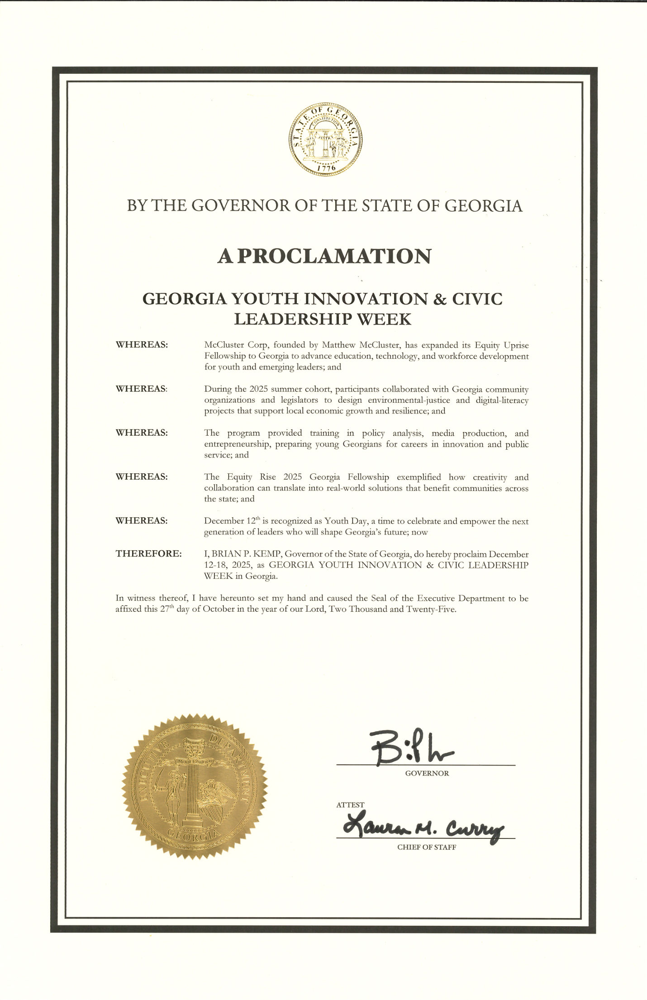
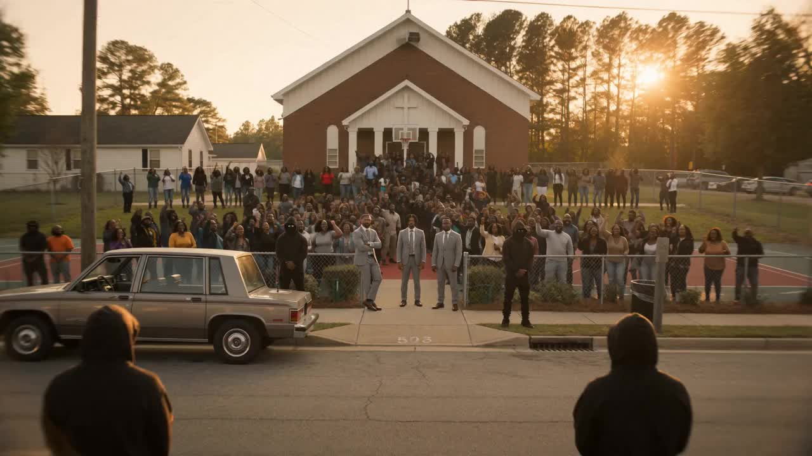

A McCluster Corp program
A McCluster Corp program
Equity.
Then we rise.
Build the record, then move the room. A civic fellowship that works in public — Georgia to Connecticut, November 2024 to February 2026, one transmission line stopped 5–3 — and every line below opens the document behind it.
Run by McCluster Corp, a registered Connecticut public charity (CHR.0069693) · founded by Matthew McCluster · nine fellows in the 2025 cohort
Above: the uprise still, editorial.
Georgia
Where the paper starts
Four dated documents, in order. The first predates the fellowship's name and is here because the Georgia work starts with it.
-
Addressed to Gov. Brian Kemp · sole author
Opposition to Legislation Mandating DNA Collection from Misdemeanor Offenders
Argued on four fronts: Fourth Amendment doctrine under Maryland v. King, the equity consequences for minority and low-income populations, the fiscal load of processing and storage, and the thin evidence that it reduces crime at all. Written alone, before any cohort. It is reproduced in full on this site.
Read the memorandum in full -
Urban Leadership Fellowship · Atlanta, Georgia
How the founder got into the policy room
Equity Uprise's founder, Matthew McCluster, applied to the Urban Leadership Fellowship's policy reform cohort and was selected; the memorandum above was the writing sample that won him the seat. The fellowship counts the work he did there as part of its own record.
The Urban Leadership Fellowship is a separate program. It does not endorse, sponsor or partner with Equity Uprise, and nothing on this page should be read as a statement by it.
-
Final policy presentation · four authors
A Policy Blueprint for Healthy School Meals in Georgia
Written with Senge Ngalame, Josh Thomas and Brandon Isome; the title slide carries all four names. It costs a twenty-school Georgia pilot at $12.6M, screens four clean-label vendors against a cost-neutral $3.75 per meal, and hands an explicit next-step list to the Georgia Department of Education and school boards.
Read the blueprint, section by section -
· proclaiming December 12–18, 2025
State of Georgia · Office of the Governor (Gov. Brian P. Kemp)
Proclamation · Georgia Youth Innovation & Civic Leadership Week

Open the document (PDF)

Connecticut
The fight that stopped
the line
7.3 miles of new high-voltage monopoles through Fairfield and Bridgeport. Two cities pushed back. The paper is all of it.
A frame from the “Environmental Injustice” film.
Connecticut Siting Council · Docket 516R · closed
It ended, in victory.
On October 16, 2025 the Connecticut Siting Council voted 5–3 to deny United Illuminating's application. UI asked the Council to reconsider; on February 5, 2026 the Council rejected that appeal and closed Docket 516R. The community's unified front was recognized as a major factor in the decision.
Sources
Connecticut, in order
Enter the evidence room: 325 filings →- United Illuminating files for a Certificate of Environmental Compatibility and Public Need: new steel monopoles along roughly 7.3 miles of the Metro-North corridor.
- The Council grants the certificate with conditions — the date on its Final Decision documents; the Superior Court’s remand order recites the decision as of February 15. Parties appeal; the court remands. The redo runs as Docket 516R.
- The fellowship's Bridgeport event at Shiloh Baptist Church. The City of Bridgeport's proclamation later records that it “transformed the discussion around environmental-justice concerns in Docket 516 into constructive engagement through art, music, and policy dialogue.”
- The Connecticut General Assembly issues three official citations at the State Capitol in Hartford.
- The Siting Council votes 5–3 to deny the application.
- McCluster Corp is registered as a Connecticut public charity, CHR.0069693, by the Department of Consumer Protection.
- Mayor Joseph P. Ganim proclaims Equity Uprise Human Rights Day in the City of Bridgeport.
- The Council rejects UI's appeal and closes Docket 516R.
Signed, sealed, on file
Four authorities.
Six documents.
Every document below opens as filed.
- Connecticut General Assembly citation · Matthew Christian Perry McCluster (PDF)
- Connecticut General Assembly citation · McCluster Corp (PDF)
- Connecticut General Assembly citation · Apex Kingdom (PDF)
- Connecticut Public Charity Registration CHR.0069693 (PDF)
- State of Georgia proclamation (PDF)
- City of Bridgeport proclamation · Equity Uprise Human Rights Day (PDF)
Now · DeKalb County, New Haven, and the Northeast scan
Make the rule
measurable
The fight that is live now is data-center siting: land, load, water, sound and who is allowed to check afterwards. The method has not changed since Docket 516 — read the whole record, then write language a county can actually enforce. Six systems, in the order an ordinance has to answer them.
-
System 01
Classification & aggregation
Regulate the project that exists, not the label on the application
Electrical demand and physical scale, read together. Aggregate phases, buildings, common-control entities, contiguous tracts and shared infrastructure, so one campus cannot be sliced into four smaller applications that each fall under the threshold.
A threshold is a policy choice. Anti-segmentation is an enforcement necessity.
-
System 02
Sound & low-frequency acoustics
Measure what residents actually hear
Baseline conditions before the build, repeatable measurement positions, ten-minute LAeq, one-third-octave analysis and a tonality review. Low-frequency noise is the complaint that ordinary A-weighted limits are worst at hearing, which is why it needs its own protocol.
Write the measurement method into the rule before the first complaint arrives, not after.
-
System 03
Water & cooling
Capacity is not a brochure number
Separate metering, watershed capacity certification, Water Usage Effectiveness reported on a schedule, cooling method disclosed on the record, and a written drought response. Local approval is where a system-wide constraint either gets priced in or gets ignored.
Routine reporting is what turns a promise into an operating condition.
-
System 04
Power & generation
Reliability and routine generation are not the same box
Load, interconnection assumptions, emergency backup, peak shaving and routine onsite generation have different grid, air-quality and neighborhood effects. An ordinance that collapses them into one line has already lost the argument it will need to have in year three.
Define what may run, when, for how long, and under which permit.
-
System 05
Independent review
Independent expertise needs governance too
County-selected reviewers, published qualification standards, conflict rules, applicant-funded escrow, scoped deliverables, itemised invoices and a written applicant response. Otherwise “independent review” becomes one more place for discretion to hide.
The reviewer should be independent of the applicant and of the political mood.
-
System 06
Continuing compliance
The permit is not the finish line
Commissioning, operational verification, periodic reporting, corrective action, notice and cure, emergency authority, retesting, written determinations, appeal. This is the half that decides whether the rule still means anything once the ribbon is cut and the room has moved on.
Continuing compliance is what converts siting policy into operating policy.
Turn media, policy and technology into one operating system a community can actually use — and prove it in public, with documents anyone can check.
The mission statement, taken from the dossier McCluster Corp files with every application, grant and fellowship.
The 2025 cohort
Nine people
The 2025 cohort is nine people. Most are named on the City of Bridgeport proclamation of December 10, 2025, which is the document of record.
October 5, Bridgeport
The fellowship's October 5 Bridgeport event at Shiloh Baptist Church. Photographs from the day. The same day the General Assembly signed its three citations in Hartford.
The operating model
How the work
moves
Six steps, in order, on a sixty-to-ninety-day clock. It is the same sequence that produced the memorandum, the blueprint, the evidence room, the anthem and the October 5 convening — run once already, in public, where it can be checked.
- Step 01Stakeholder intelligence. Who decides, who operates, who lives there, who advocates, who engineers it, which utility carries it, and where the legal and financial exposure actually sits.
- Step 02Interview program. Structured consultations with attribution rules agreed up front: background conversations, permissioned quotes, and a stakeholder register that survives the campaign.
- Step 03Policy product. Legislative memorandum, executive brief, model language, technical appendices, comparative research. The thing a staffer can lift a clause out of.
- Step 04Public process. Council, board, commission and committee meetings attended; testimony prepared; hearing briefs written; the public record preserved as it is made, not reconstructed afterwards.
- Step 05Civic campaign. Creator participation, short-form media, issue explainers, music, interviews, photography, coalition outreach — the part that decides whether anyone outside the hearing room ever hears the argument.
- Step 06Capstone and record. A forum or a cultural program, campaign analytics, the archived evidence, the final publication. The record is the deliverable; everything before it is method.
Step five, measured
Whose numbers these are. They come from the media-engagement reporting for Commissioner Nicole Massiah's DeKalb County District 3 operation, where Matthew McCluster worked on campaign photography, video, event coverage and social publishing. That is client campaign work in the founder's professional history — it is not Equity Uprise programming, and it is not the source of any citation on this page. The figures are measurement-window totals, not lifetime account totals.
Ways to fund the work
Three lanes.
One disclosure standard.
An organization can fund the perspective it cares about without buying the conclusion of the research. The lane is declared; the findings stay where the evidence puts them.
The disclosure standard. Sponsored messaging is allowed to have a point of view; the research record is not for sale. Who funded a campaign is disclosed, and an independent finding stays as it was found — including when it is inconvenient for the organization that paid for the lane. Engagements are scoped at sixty to ninety days around one live issue: a policy fight, an infrastructure project, or a public-information gap. Bring the issue →
Ways in
- Apply for a verified profile put your organization on the record with real registry identifiers
- Hear the anthem “Environmental Injustice” and the rest of the 516R Release
- Fund the next campaign a contribution to the programming: anthems, film, community work
- Submit a civic anthem turn a cause into a song
- Partner or sponsor bring Equity Uprise to your community, agency or campus
Cohort artists onboard through the artist door: profile, the Market, performance packets. The whole McCluster ecosystem is one room over.